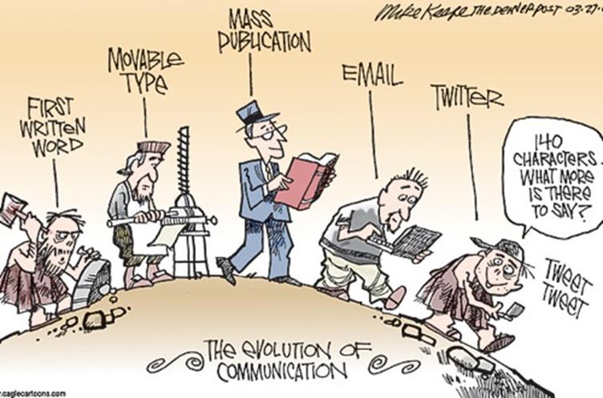

Communication has evolved greatly. Traditional communication methods such as mail have been overtaken by more sophisticated forms. Electronic Communication methods offer higher speeds; more efficiency, reliability, integrity, security; scale across larger geographical areas and require less resources to use. Tools and services such as e-mail, blogs, podcasts, instant messaging, and social networks among other multimedia methods have changed the way we communicate to a great extent.
In this chapter, we give an overview of the world of networks: we will discuss the following:
This chapter is crucial since some of the concepts learned in it will be useful in understanding the rest of the course.
The need to communicate is human nature. Communication has evolved over the years, from carvings on rocks to more complex forms. The diagram below is an apt description of this evolution.
Modern communication methods are as a result of the evolution of computer networks. Since the first e-mail was sent back in 1965, communication has come a long way.
We are no longer restricted with face to face communication. And with the internet the world has become more interconnected than ever before.
Computer networks are not just responsible for communication, but our entire way of life has evolved. The way we work, the way we interact, among other ways have changed significantly.
Some of the ways we use computer networks include:
This introductory chapter is meant to help you understand the importance of communication over networks. These concepts, will be crucial in understanding this course. We will learn the fundamentals of communications over networks. In the next chapter, we will look at how communication works using the layered models and learn some more concepts.
 275
275
 114
114
 Save
Save
© 2022 Venom.com All rights reserved


Responses (7)
Others
Anand Mahindra
5m ago
Thank you so much for letting me express my feeling about your post. You write every blog post so well. Keep the hard work going and good luck. Hope to see such beneficial post ahead to.
Kamala Harris
7m ago
@Linda I appreciate so much all of the information you put forward in this piece. It is beautifully written, and it connects me with my Mexican ancestry on so many levels.
Johnny Depp
15m ago
Bravo üëèüèΩüëèüèΩüëèüèΩ‚Ä¶...
Chris Evans
1h ago
Thanks for sharing such a great information.. It really helpful to me..I always search to read the quality content and finally i found this in you post. keep it up!
James Cameron
5h ago
nice post . Thank you for posting something like this keep up the good work
Ratan Tata
2d ago
I’ve been surfing on the web more than 3 hours today, yet I never found any stunning article like yours. It’s alluringly worth for me. As I would see it, if all web proprietors and bloggers made puzzling substance as you did, the net will be in a general sense more beneficial than at whatever point in late memory.
Sundar Pichai
5d ago
I read this post your post so nice and very informative post thanks for sharing this post